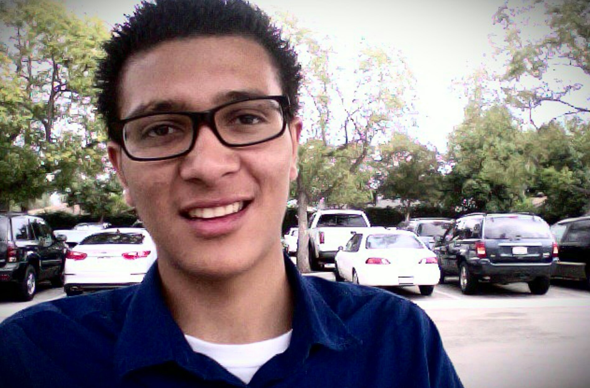

Hello this is a website "About me!" for my cs3220 class. I am really excited to be in this class,
because it has given me the oppertunity to bring how my creative side or in other words, have a creative
license to create what I want. First off, I have two older brothers named Luis and Erick Martinez. We are
each 2 years apart and I admire them and look up to them. I have two lovely parents who support me, Rosalva and
David Martinez. As a child I have always been fascinated with digital world that revolved around my life. Further
more it has led me to find a passion in my current degree that I am pursuing, computer science.